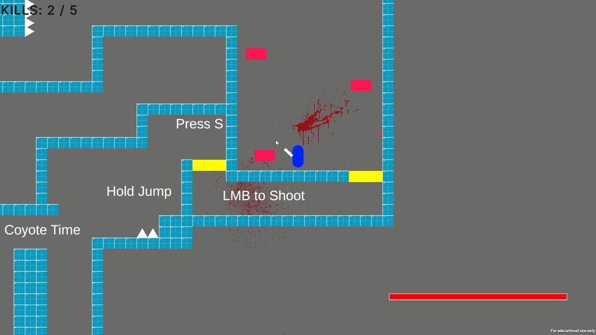

Shotgun Master
Unity Engine Solo Project

FULL GAMEPLAY VIDEOMade as part of my Introduction to Mechanics Design Module in my second year at University of Staffordshire, this is a simple shooter prototype with a focus on game ‘juice’.
I used the C# Language within Unity to create the mechanics and refine them to make the shotgun feel impactful.
The goal of the game is to kill all of the enemies within the level.
The control scheme also uses forgiveness mechanics such as coyote time and variable jump height for a smoother play experience.
Key Design Decisions:
- All effects are over the top, such as the screen shake, blood effects, sound effects, shell ejection and slow-motion effect. This is to create the feeling of a super powerful shotgun.
- The movement is designed to make the player feel powerful and ‘chunky’, with a fast fall speed and no ability to be pushed around by enemies.
- Forgiveness mechanics such as coyote time, input buffering and variable jump height make the character easy and smooth to control, increasing the sense of power that the player has over the enemies.